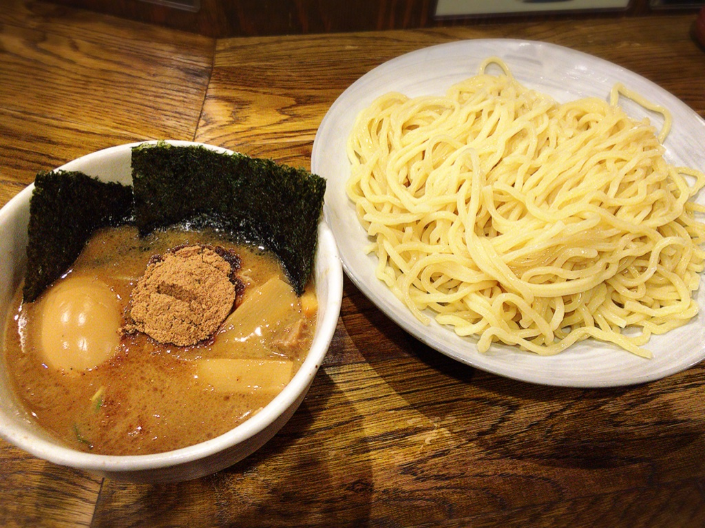
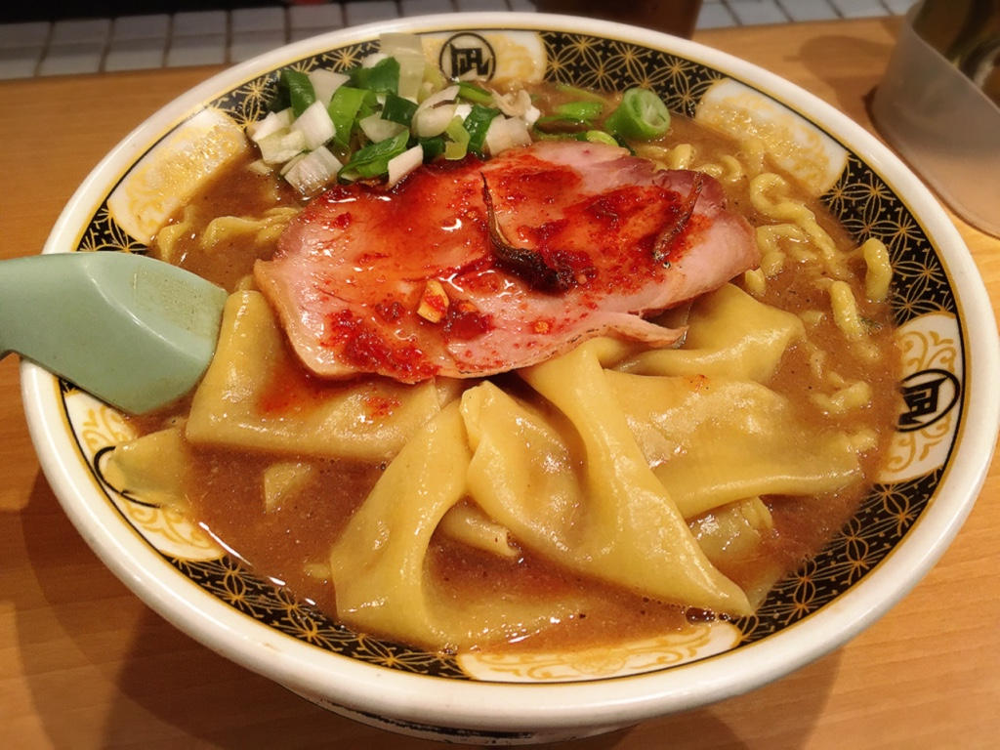
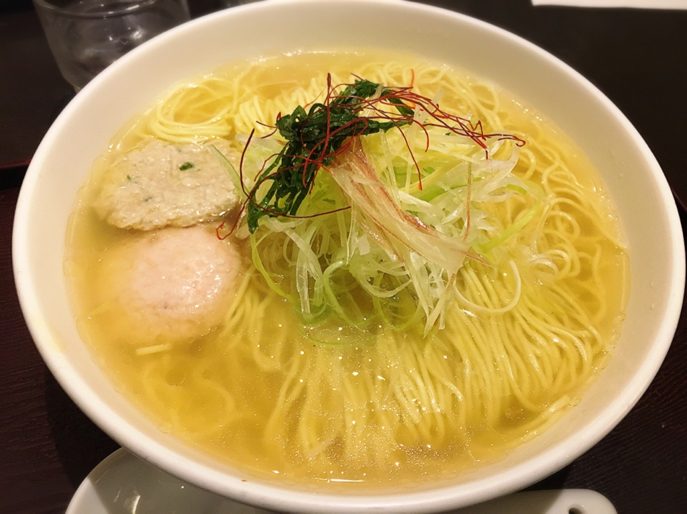
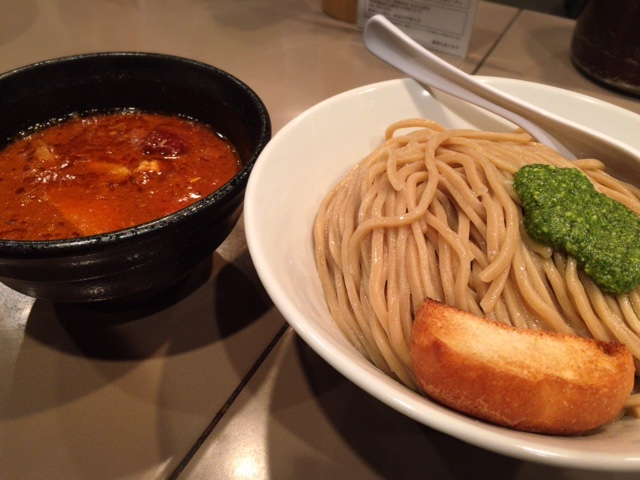
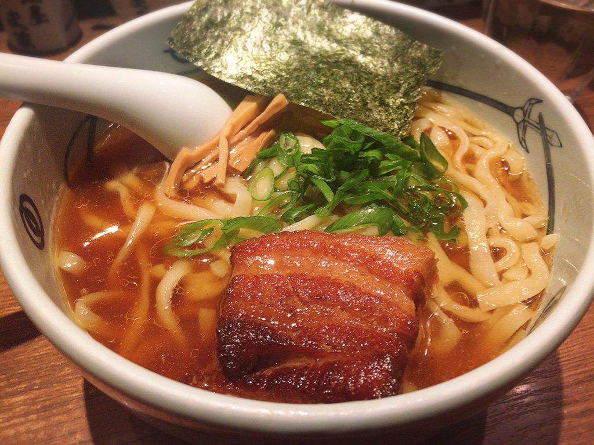

新宿
| 風雲児 | |
|---|---|
|  | つけめん 750yen新宿界隈でNo1と言われるほどの有名店です。 |
| すごい煮干ラーメン凪 新宿ゴールデン街店本館 | |
|---|---|
|  | すごい煮干ラーメン 850yen1杯のラーメンに煮干50gを使って、濃厚かつ丁寧に仕上げた煮干ラーメンは絶品。 |
| 麺屋海神 | |
|---|---|
|  | あら炊き塩らぁめん 800yen魚介の風味がギュッと凝縮された出汁と特製塩ダレの相性がバツグン。 |
| つけ麺 五ノ神製作所 | |
|---|---|
|  | 海老トマトつけ麺 880yen最初にスープをすするとわぁぁぁガツンと海老。思っきし海老！で後からトマトの酸味。 |
| 麺屋武蔵 新宿本店 | |
|---|---|
|  | 角煮ラーメン 900yenラーメンブームの火付け役として、もはや老舗店と言われる麺屋武蔵。 |